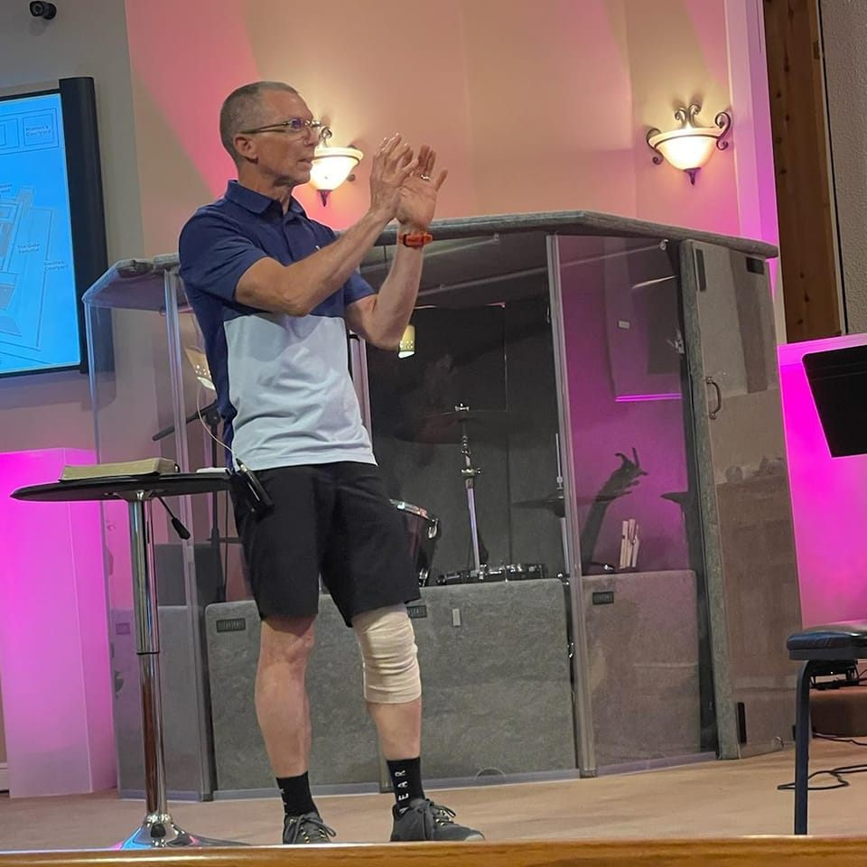
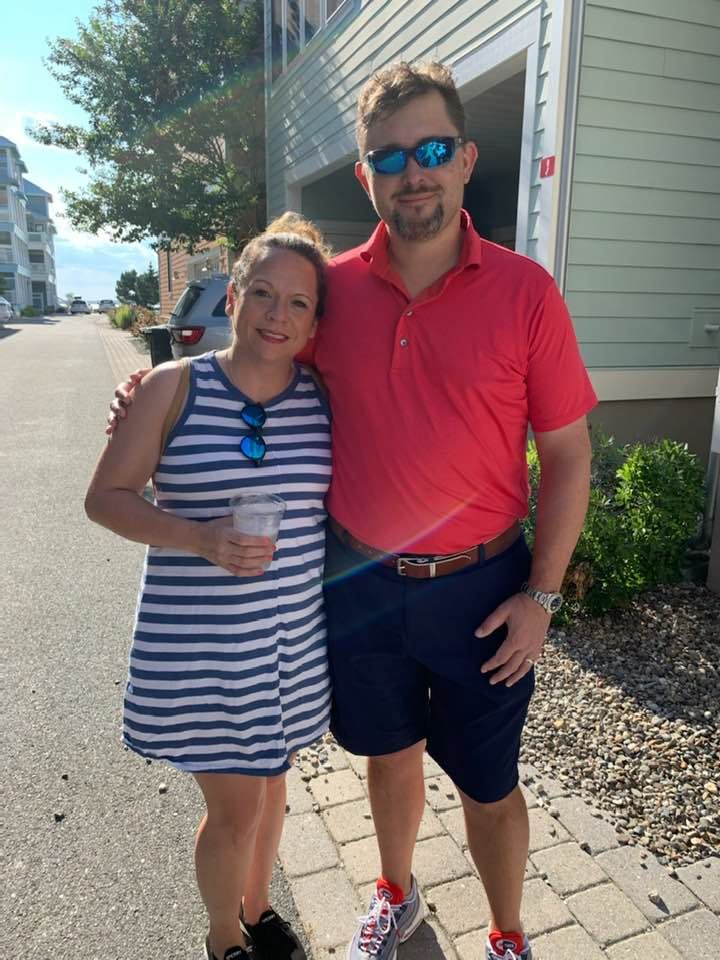
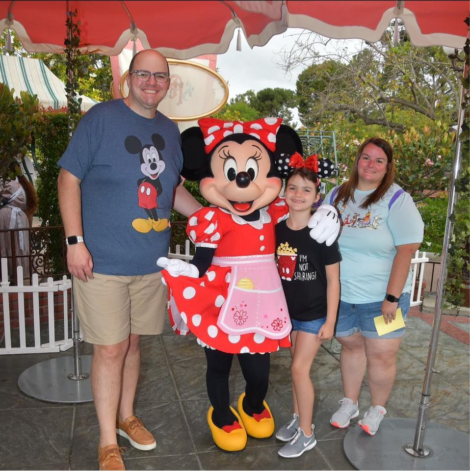

One Community Church Indiana
Where Community is Our Middle Name!
Meet the Pastors of One Community Church
We at One Community Church are blessed, with not only one incredible pastor, but three! Meet our pastors Andy Bramer, Daniel Tatum, and Brion Rector.
Andy Bramer
Student & Family Pastor
Cell: 502-693-7090
Email: bramer1020@gmail.com
My name is Andy Bramer I am the Student and Family Pastor of One Community Church. I have been working with students and their families for over 20 years. My wife (Ann Marie) and I, have been blessed with 2 awesome sons, Jon and Matt, who are now both married. Jon and his wife, Emily have blessed us with 3 beautiful grandkids (Annabelle, JR and Oliver. Matt and his wife Sandy just blessed us with our 4th grandchild, Everett. They are also a part of our worship team at OCC.
I came to know Christ when I was 12 years old while attending a local church. I struggled in my walk with Christ while I was in middle and high school. By the time I was realized it was time to quite running. I responded to God’s call into full time youth ministry at the age of 25 and have never looked back. I love working with and ministering to students and their families. One of the ways I am able to do that is through Campus Life & the Fellowship of Christian Athletes that meet weekly at Clarksville Middle & High School. I love the local church and would be glad to talk with you about any questions you might have.
Daniel Tatum
Young Adult Pastor
Cell: 606-224-0014
Email: dgtatum@gmail.com
My name is Daniel Tatum. I am one the associate pastors, besides alternating preaching on Sundays I also lead one of the adult life groups. I have been married to my lovely wife Wendi since 2004. We have been blessed with two children, Saul and Josie. My walk with God started with the seed my mother planted while dragging me to church and Sunday school every week when I was a kid.
I gave my life to Christ when I was 13, but I really started building a stronger relationship with him when I met Wendi. We started attending church together and in 2006 our path led us to Harvest Valley (now One Community). We quickly felt like we had found a church family instead of just a church. God has steadily led us to take on more responsibility in the church. Wendi is active in her role in working with the students while I also lead the tech team. My passion is teaching and I hope to make learning to walk with God a simple and easy to understand concept. God has called me to outreach and I also feel very strong about helping the young men in our church develop into good Christian men as they grow older. We would be glad to see you and your family join us in worshiping and serving God.
Brion Rector
Adult Pastor
Cell: 812-406-8021
Email: jbarector@gmail.com
My name is Brion Rector. I am also one of the associate pastors. One of my roles includes leading our adults. My wife Hope and I have been married since the summer of 2009. On May the 16th 2014 we welcomed our daughter Grace Anne Rector into the world. After much prayer, thought and discussion I felt God was calling my wife and I not only to this church but also to this position.
The Lord came into my life in 1998 and life has been a roller coaster ride, full of highs, lows and a few surprise turns ever since. Since God has become the center of my life, I have seen His plan and purpose for my life. I will continue to focus on what God wants in my life and marriage and let God lead me where He needs me to go. We love it here at One Community Church. I have been involved in various aspects of ministry over the last 12 years in churches primarily located in Southern Indiana. Youth ministry was my primary calling but have recently felt God calling me into the role of adult pastor. I look forward to meeting you and hearing what God is doing in your life.
 🔝
🔝